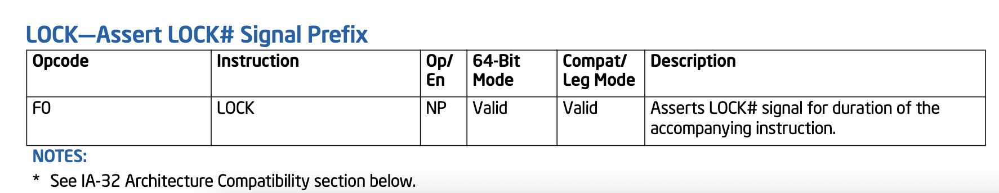

锁的原理¶
锁是怎么实现的？怎么做到独占的？实际上得从原子操作说起。
原子操作¶
原子操作不是说一定要只能一个动作，而是说把它包装成一条指令或者一个函数的时候，它可以保证不会被侵入。在单核CPU上，一条指令肯定是原子的，但不见得一条指令就只做了一个操作，可能是两个操作，比如CAS(Compare&Set或Compare&Swap，X86下对应的是CMPXCHG汇编指令)是比较并交换操作数，这在单核上没有问题，但在多核上如何保证不被打断呢？这就需要硬件来支持了。
我们在intel IA-64手册中，可以翻到这样一条指令前缀: 
按文档描述，把这条前缀加到某些指令前时，它可以实现一个原子操作。在x86体系中，CPU里专门有一条引线叫HLOCK pin，当遇到有LOCK前缀的指令就拉低该引线电位，从而锁住了总线。那么在同一总线上的其他Core就无法通过总线访问内存了。所以原子操作的本质仍然是锁，只是这个锁是硬件层面的。也不存在软件层面上真正意义的无锁操作，底层仍然是锁。
我们在Go的源码中也能看到大量这样的代码:
// src/runtime/internal/atomic/asm_amd64.s
TEXT runtime∕internal∕atomic·Cas(SB),NOSPLIT,$0-17
MOVQ ptr+0(FP), BX
MOVL old+8(FP), AX
MOVL new+12(FP), CX
LOCK
CMPXCHGL CX, 0(BX)
SETEQ ret+16(FP)
RET
随着现在CPU核数逐步增多，这种LOCK前缀锁总线的方式带来的性能问题就凸显了出来，所以现在的体系遇到LOCK前缀时，不是去锁整个总线，而是先检查一下要锁的内容是不是在cache中，如果在的话只锁那一行cacheline，只有同时访问这一个cacheline的其他core才会被锁住，就像数据库的表锁和行锁。这样一来，性能的影响没那么大了，但是原子操作还是会带来性能影响的，只是硬件层面的东西我们作为程序员改变不了什么也就很少去提。
那么原子操作和我们平时所说的互斥锁有什么区别呢？我们谈原子操作是只针对一个操作，而锁是往往是要包含一段逻辑、一个block的。
无锁结构¶
也就是Lock Free，它的做法用伪码来表达是这样的:
for {
old = atomic.Load()
if (atomic.CAS(old, new)){
break
}
}
// CAS 伪码
func compareAndSwap(addr int, old int, new int) bool{
if (*addr != old){
return False
}
*addr = new
return True
}
当old通过原子操作读出以后，如果有其他CPU操作修改了这个值，那么atomic.CAS就会发现old变了则修改失败重新循环，反之修改成功退出循环，这就是无锁结构。运气好的话一次就执行完了，运气不好一直被打断的话循环多少次是未知的。它的实际使用场景比如说是一个无锁结构的链表队列，当需要向队列尾部插入元素时，插入不成功则说明有其他线程刚刚插入过，队列尾部的地址已经变了，则需重试。
这种结构也有个问题，就是ABA的问题。试想一下atomic.Load读出来是A，然后被人修改为了B再修改回A，atomic.CAS就发现不了接着执行自己的逻辑。这样粗看好像也没有什么问题，但CAS只是检查的一个地址，实际情况往往会有其他的逻辑，有人做了一个比喻:你拿着一个装满钱的手提箱在飞机场，此时过来了一个火辣性感的美女，然后她很暖昧地挑逗着你，并趁你不注意的时候，把用一个一模一样的手提箱和你那装满钱的箱子调了个包，然后就离开了，你看到你的手提箱还在那，于是就提着手提箱去赶飞机去了。
怎么解决ABA的问题呢？可以采用数据库乐观锁的办法，每次进行修改的时候添加一个时间戳或者流水号，上例就是atomic.Load读出来以后就是A20191222，修改为B就变为了B20191223，再进行一次修改就是A20191224了。
缓存一致性¶
CPU是不会和内存直接交互的，它和内存之间的读写都是通过L1、L2、L3缓存来做中转。那么如果内存上有个X=1，CPU1和CPU2都把这个X读到自己的缓存上，CPU1这时候对X做了修改让X=3，CPU2又如何知道呢？这就是缓存一致性的问题，需要确保的是任一时刻，缓存的内容是相同的。
缓存是以行为单位的，也就是cacheline，每行中除了缓存的数据外还包括内存地址和状态。而状态又分为四种，即M、E、S、I。M即modify，表示当前CPU修改过数据，需要以此为准回写到主存中去；E即exclusive，独占，当前的CPU独占了这个数据，和主存中是一致的，其他CPU没有的；S即shared，共享，各个CPU都有这行数据，且是和主存一致的；I即invalid，表示失效的，CPU发现是这个状态就意味着需要从主存里重新去拿一下。
当CPU2要去写某一行数据的时候，它就会向总线发出一个请求: CPU2要独占某一段地址。CPU1、CPU3、CPU4一直都在嗅探总线去接收总线的通知，然后去检查自己的缓存中有没有这行数据，如果CPU3有且这行状态是共享的，那就把CPU3的这行变为失效状态；但如果CPU1那行已经是独占的，这个CPU2就得等，等到CPU1修改完数据回写到主存当中会解除CPU1的独占状态，CPU2重新从主存刷新自己的缓存再把它修改为独占状态。修改了数据就需要改为modify，因为需要一批数据一同刷入主存。
这种通过四种状态保证缓存一致性的方式和我们日常见到的锁的原理差不多，数据库修改某行的时候也是加行锁，其他人要修改该行就得排队，要修改其他行就不受影响。
Go语言中的锁¶
Futex¶
锁的本质是通过某种操作实现休眠、唤醒等操作，那它就一定要由操作系统来实现，由OS实现才能避免对于休眠的单位不去分配时间片。那么锁就需要进行系统调用，它的效率就会非常低？Linux在很早期的版本就提供了一种锁Futex，虽然是由操作系统提供的，但它是在用户空间实现的，是一种特殊的系统调用，大部分情况下不需要进入内核空间，避免了通常的系统调用所需的用户态内核态之间的切换。Futex其实就是一块内存空间，通常是一个整型变量，大家通过原子操作对它做修改，要么就修改成功执行逻辑，要么就修改失败等待它。
Linux手册中提供了这种锁的调用方式，包括锁定、等待、唤醒等参数。Go中调用其API:
func futex(addr unsafe.Pointer, op int32, val uint32, ts, addr2 unsafe.Pointer, val3 uint32) int32
// Linux futex.
//
// futexsleep(uint32 *addr, uint32 val)
// futexwakeup(uint32 *addr)
//
// Futexsleep atomically checks if *addr == val and if so, sleeps on addr.
// Futexwakeup wakes up threads sleeping on addr.
// Futexsleep is allowed to wake up spuriously.
func futexsleep(addr *uint32, val uint32, ns int64) {
if ns < 0 {
futex(unsafe.Pointer(addr), _FUTEX_WAIT_PRIVATE, val, nil, nil, 0)
return
}
var ts timespec
ts.setNsec(ns)
futex(unsafe.Pointer(addr), _FUTEX_WAIT_PRIVATE, val, unsafe.Pointer(&ts), nil, 0)
}
func futexwakeup(addr *uint32, cnt uint32) {
ret := futex(unsafe.Pointer(addr), _FUTEX_WAKE_PRIVATE, cnt, nil, nil, 0)
if ret >= 0 {
return
}
systemstack(func() {
print("futexwakeup addr=", addr, " returned ", ret, "\n")
})
*(*int32)(unsafe.Pointer(uintptr(0x1006))) = 0x1006
}
有了API，并不能直接用，还要对其进行包装:
func lock(l *mutex) {
gp := getg()
if gp.m.locks < 0 {
throw("runtime·lock: lock count")
}
gp.m.locks++
// 尝试原子操作修改l.key的值为锁定状态
v := atomic.Xchg(key32(&l.key), mutex_locked)
if v == mutex_unlocked {
return
}
// 尝试失败则进入自旋状态
wait := v
spin := 0
if ncpu > 1 {
spin = active_spin
}
for {
// 每自旋一次尝试拿一次锁
for i := 0; i < spin; i++ {
for l.key == mutex_unlocked {
if atomic.Cas(key32(&l.key), mutex_unlocked, wait) {
return
}
}
procyield(active_spin_cnt)
}
// 在rescheduling状态进行尝试拿锁
for i := 0; i < passive_spin; i++ {
for l.key == mutex_unlocked {
if atomic.Cas(key32(&l.key), mutex_unlocked, wait) {
return
}
}
osyield()
}
// 尝试进入睡眠状态
v = atomic.Xchg(key32(&l.key), mutex_sleeping)
if v == mutex_unlocked {
return
}
// 进入futex睡眠状态
wait = mutex_sleeping
futexsleep(key32(&l.key), mutex_sleeping, -1)
}
}
func unlock(l *mutex) {
v := atomic.Xchg(key32(&l.key), mutex_unlocked)
if v == mutex_unlocked {
throw("unlock of unlocked lock")
}
// futex唤醒操作
if v == mutex_sleeping {
futexwakeup(key32(&l.key), 1)
}
gp := getg()
gp.m.locks--
if gp.m.locks < 0 {
throw("runtime·unlock: lock count")
}
if gp.m.locks == 0 && gp.preempt {
gp.stackguard0 = stackPreempt
}
}
其一开始尝试拿锁属于投机，先以最乐观的情况考虑，如果没人竞争就能直接拿到锁，这种概率并不低，我们自己做性能设计时也可以参考它先设计乐观的情况。尝试失败则进入自旋状态，自旋状态打个比方，就是你在火车上上厕所，发现厕所有人，你在外面焦急的转圈等待；它是次一级的理想状态，因为厕所的人出来你马上就能进去，若是回到座位上可能被人插队；procyield(active_spin_cnt)背后会调用一个专门的CPU指令PAUSE，它可以降低自旋状态时CPU的功耗并进入一个短暂的等待。自旋时没拿到锁则进入另一个状态，相当于回到座位上但是盯着厕所的门，这个状态下执行的osyield()是操作系统提供的等待，这种等待的时长就比CPU指令长很多，同时涉及到状态切换开销也会大很多。这种积极的尝试如果仍然失败，则进入睡眠状态，等待厕所里面的人出来唤醒它，唤醒后重新进入这个循环。
尽管做了这样的包装，这种锁仍然属于较低层次的，一般不会给用户直接用。
Sema¶
信号量，可以控制同时执行的数量，如果数量是1就相当于互斥锁，如果都在执行了再进来人就得排队。
首先，它的结构是这样的:
type semaRoot struct {
lock mutex
treap *sudog // root of balanced tree of unique waiters.
nwait uint32 // Number of waiters. Read w/o the lock.
}
lock 就是之前设计的那种锁，在这之上提供了一个treap这样的平衡树结构，它是等待人(G对象)的列表，还有nwait计数器存储等待人的数量。
它的核心获取锁的逻辑:
func semacquire1(addr *uint32, lifo bool, profile semaProfileFlags, skipframes int) {
//简单的情况，即直接成功获取锁
if cansemacquire(addr) {
return
}
...
// 复杂的情况:
// 1.增加等待者计数；
// 2.再尝试一次获取锁，成功则返回；
// 3.将自己enqueue waiter；
// 4.睡眠
for {
lock(&root.lock)
atomic.Xadd(&root.nwait, 1)
if cansemacquire(addr) {
atomic.Xadd(&root.nwait, -1)
unlock(&root.lock)
break
}
root.queue(addr, s, lifo)
goparkunlock(&root.lock, waitReasonSemacquire, traceEvGoBlockSync, 4+skipframes)
if s.ticket != 0 || cansemacquire(addr) {
break
}
}
if s.releasetime > 0 {
blockevent(s.releasetime-t0, 3+skipframes)
}
releaseSudog(s)
}
func cansemacquire(addr *uint32) bool {
for {
v := atomic.Load(addr)
if v == 0 {
return false
}
if atomic.Cas(addr, v, v-1) {
return true
}
}
}
cansemacquire检查一下能不能获得这把锁，能获得则减1退出循环。不能获得则加入到队列中，goparkunlock休眠。信号量归根结底是用原子操作来维护某个地址上的信号量加减，用一个锁来维护一个等待者计数器，这里的&root.lock是为了保护对计数器的操作和入队的操作。
接着我们看看释放:
func semrelease1(addr *uint32, handoff bool, skipframes int) {
root := semroot(addr)
atomic.Xadd(addr, 1)
// 简单的情况：没有等待者
if atomic.Load(&root.nwait) == 0 {
return
}
// 复杂的情况：找到一个等待者并唤醒它
lock(&root.lock)
if atomic.Load(&root.nwait) == 0 {
unlock(&root.lock)
return
}
s, t0 := root.dequeue(addr)
if s != nil {
atomic.Xadd(&root.nwait, -1)
}
unlock(&root.lock)
if s != nil { // May be slow or even yield, so unlock first
acquiretime := s.acquiretime
if acquiretime != 0 {
mutexevent(t0-acquiretime, 3+skipframes)
}
if s.ticket != 0 {
throw("corrupted semaphore ticket")
}
if handoff && cansemacquire(addr) {
s.ticket = 1
}
readyWithTime(s, 5+skipframes)
if s.ticket == 1 && getg().m.locks == 0 {
goyield()
}
}
}
首先，释放必然使地址上的信号量加1。其次，去查看是否有人等，没人等则直接退出；如果有人等，则从队列中dequeue一个等待者、计数器减一，等待者可能是按地址排序的，但这属于其内部实现，我们没法确定弹出的是谁。最后如果传入的handoff为true表示要进行权限转移，会给这个弹出的等待者发一张票，之前semacquire1的for循环中goparkunlock休眠后被唤醒的第一件事就是检查有没有拿到票，拿到了则可以短路出去，没必要再走一次for循环和别人竞争抢锁&root.lock。
信号量结合了它的特征，在一些短路的设计上值得我们学习。它仍然是runtime层面的，还不是交给用户去使用的。
Mutex¶
给用户使用的锁在标准库中，我们来看看它的实现:
type Mutex struct {
state int32
sema uint32
}
const (
mutexLocked = 1 << iota // mutex is locked
mutexWoken
mutexStarving
mutexWaiterShift = iota
)
Mutex结构包括一个状态和一个计数，这个状态分为四种，即锁定、唤醒(这里可以理解为自旋)、饥饿、等待者转移。怎样会出现饥饿状态呢？比如A、B竞争一把锁的时候，A拿到了，B经过不断尝试最终进入了睡眠状态，A释放锁的时候又有C去竞争锁，C此时可能处于自旋状态，同理C后面可能还有D、E，B就一直拿不到锁处于饥饿状态。这种状态在并发编程中并不少见。
接着我们看看其锁定的过程:
func (m *Mutex) Lock() {
// 进入快速路径，乐观状态，没有竞争
if atomic.CompareAndSwapInt32(&m.state, 0, mutexLocked) {
if race.Enabled {
race.Acquire(unsafe.Pointer(m))
}
return
}
// 进入慢速方式
m.lockSlow()
}
func (m *Mutex) lockSlow() {
var waitStartTime int64
starving := false
awoke := false
iter := 0
old := m.state
for { // 依然通过循环处理
// 判断没有人处于饥饿状态，且还有可自旋次数，则进入自旋状态去尝试拿这把锁
if old&(mutexLocked|mutexStarving) == mutexLocked && runtime_canSpin(iter) {
if !awoke && old&mutexWoken == 0 && old>>mutexWaiterShift != 0 &&
atomic.CompareAndSwapInt32(&m.state, old, old|mutexWoken) {
awoke = true
}
runtime_doSpin()
iter++
old = m.state
// 拿到锁则是mutexLocked状态，接着向下走；没拿到重新看可自旋次数。
continue
}
// 从这开始就有两种可能，要么拿到锁了，要么自旋次数用完了
new := old
// 接着主要做一些状态变更和处理
if old&mutexStarving == 0 {
new |= mutexLocked
}
if old&(mutexLocked|mutexStarving) != 0 {
new += 1 << mutexWaiterShift
}
if starving && old&mutexLocked != 0 {
new |= mutexStarving
}
if awoke {
if new&mutexWoken == 0 {
throw("sync: inconsistent mutex state")
}
new &^= mutexWoken
}
if atomic.CompareAndSwapInt32(&m.state, old, new) {
// 没人上锁且没有饥饿状态的，则可以拿到锁跳出整个循环
if old&(mutexLocked|mutexStarving) == 0 {
break // locked the mutex with CAS
}
// 如果我之前已经在等待了，则排在队列的最前面
queueLifo := waitStartTime != 0
if waitStartTime == 0 {
waitStartTime = runtime_nanotime()
}
runtime_SemacquireMutex(&m.sema, queueLifo, 1)
// 判断时间是不是超出了饥饿状态的时间阈值
starving = starving || runtime_nanotime()-waitStartTime > starvationThresholdNs
old = m.state
// 如果我自己就是饥饿的，那么我拿到锁，做相关状态修改，退出循环
if old&mutexStarving != 0 {
if old&(mutexLocked|mutexWoken) != 0 || old>>mutexWaiterShift == 0 {
throw("sync: inconsistent mutex state")
}
delta := int32(mutexLocked - 1<<mutexWaiterShift)
if !starving || old>>mutexWaiterShift == 1 {
delta -= mutexStarving
}
atomic.AddInt32(&m.state, delta)
break
}
awoke = true
iter = 0
} else {
old = m.state
}
}
if race.Enabled {
race.Acquire(unsafe.Pointer(m))
}
}
总结¶
我们从原子操作到Mutex，经历了四个层次的包装，每层包装面向不同的目的去解决不同的问题。在做发动机的时候，我们考虑的是动力、性能、省油，但拿它做飞机引擎还是做汽车引擎就要做不同的包装。我们平时做设计的时候往往也需要层进式的考虑问题，不要总是想着一步到位。